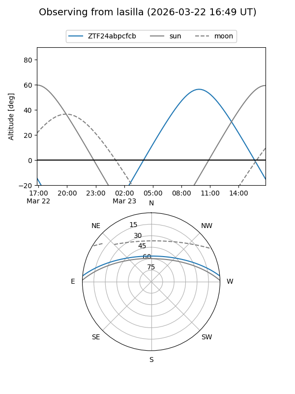
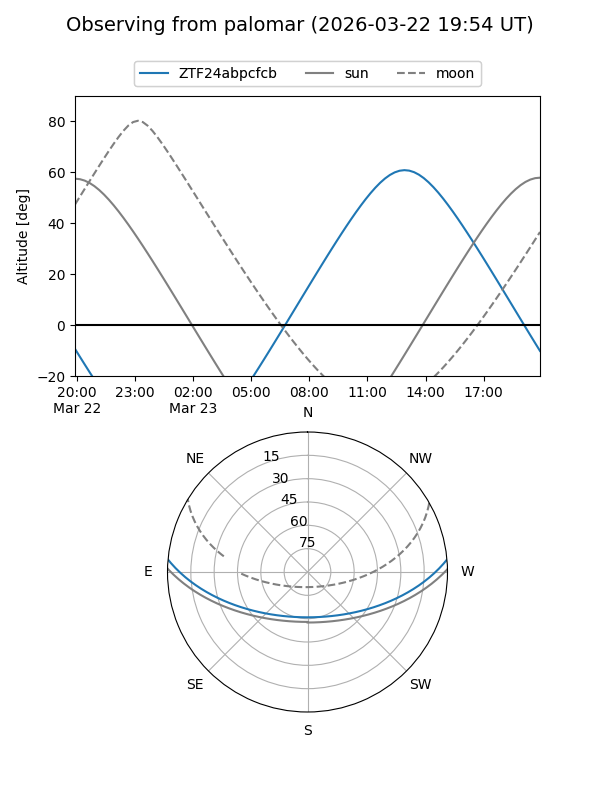

ZTF24abpcfcb
Target ZTF24abpcfcb at 2026-03-22 14:56
Aliases and brokers:
FINK: link
Lasair: link
ALeRCE: link
alt names
ZTF24abpcfcb (ztf,fink_ztf)
Coordinates:
equatorial (ra, dec) = 257.6253,+4.26290
equatorial (HMS+DMS) = 17:10:30.07,+04:15:46.45
galactic (l, b) = (24.8744,+24.34713)
Flags:
Photometry:
last ztfg=17.45
1 ztfg detections
Lightcurve
Visibility


Additional plots